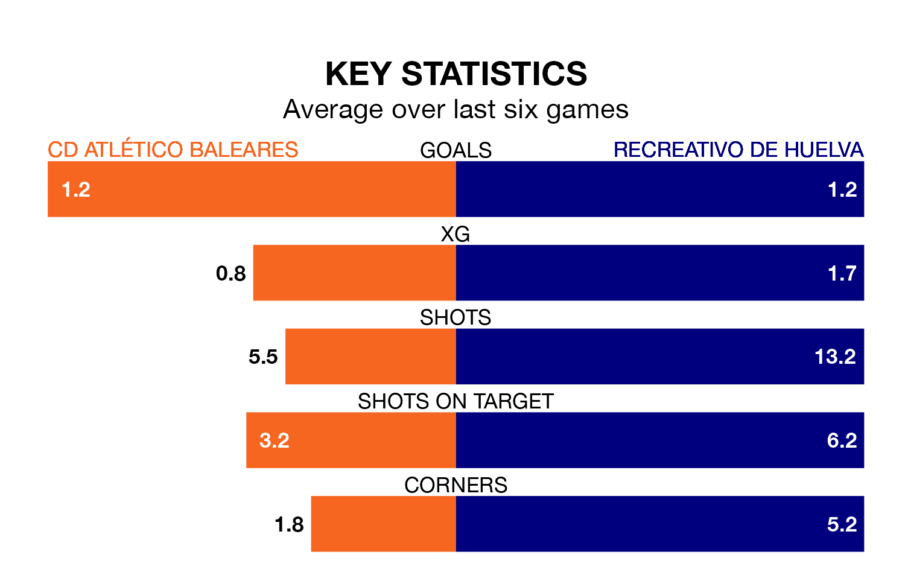

Recreativo de Huelva visit CD Atlético Baleares at Campo de Son Malferit on early Sunday on the back of three consecutive wins in Primera Division RFEF Group 2.
Recreativo de Huelva have picked up 13 points from their last six games, and they face an Atlético Baleares side who have lost their last three matches, and collected nine points from the last possible 18.
In David Rodríguez Sánchez, Atlético Baleares have one of the league's most on-form strikers so far this season. He has notched one goal in one appearance, to sit third in the scoring charts.
Recreativo de Huelva's top scorers, with one goal in one game each, are Antonio Domínguez Sacramento, Caye Quintana and Josiel Alberto Nuñez Rivera.
The hosts are 16th in the table after 18 games, of which they have won four and drawn five, earning 17 points.
The away side are 11 places ahead of Atlético Baleares in fifth, with nine wins and five draws putting them on 32 points.
With 12 goals in 18 games so far this season, Atlético Baleares are scoring at below the league average rate with 0.7 goals per game. And they are conceding more than average, letting in 29 goals at a rate of 1.6 per game.
Recreativo de Huelva are also below average scorers, with 1.1 goals per game, compared to a league average of 1.2. They have conceded 0.9 goals per game.
Atlético Baleares's last match was on January 3, a 0-0 draw against Linares Deportivo.
Recreativo de Huelva beat Algeciras CF 3-2 last time out, on January 2, with Domínguez Sacramento and Luis Alejandro Alcalde Martínez on the scoresheet.
Updated: 11:31, 09/01/24